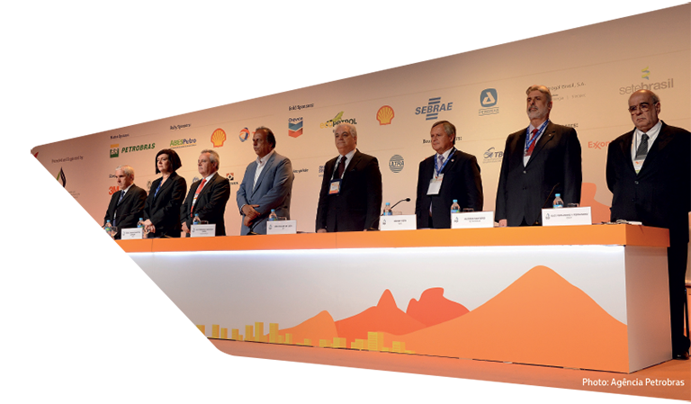
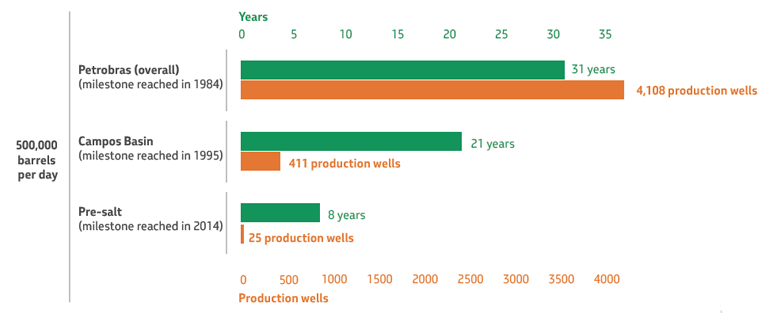
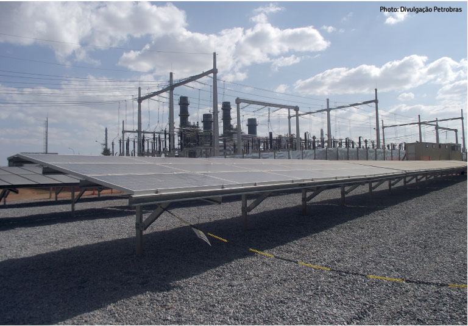
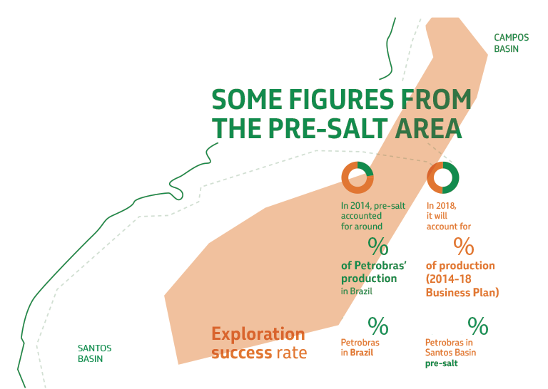
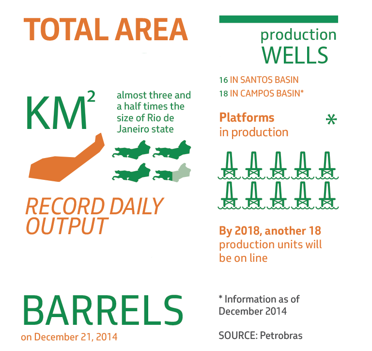

Executives discussed key issues for the oil and gas sector at the 21st edition of the World Petroleum Congress (WPC), the industry’s largest global event, held last June in Moscow. The congress, which takes place every three years, brings together ministers of state and company CEOs from more than 80 countries.

The next wave
of innovation



0
0
0
0

0
0
0
0

Opening session of Rio Oil & Gas, held in September in Rio de Janeiro,
which generated expected business deals worth R$164 million
over the following 12 months
THE 0 BARREL CHALLENGE
In 2014, Petrobras reached the milestone of 500,000 barrels of oil produced per day in the pre-salt layer. Today it is producing around 700,000 barrels per day in the province, which is composed of major accumulations of light oil with a high commercial value. In the pre-salt, the evolution of production is higher than that recorded in other similar areas in the world, as well as the average production per well.
PETROBRAS’ GROWTH
The pre-salt production also demonstrates Petrobras’ evolution over the years. Time and number of wells needed to reach output of 500,000 barrels per day:
One of the highlights of this edition was the special session on “The next wave of upstream innovation,” which discussed recent and future technological innovations aimed at exploring and producing oil and gas in ever more challenging frontiers. Petrobras’ executive manager for the Libra area, Anelise Lara, participated in the debate and used Brazilian pre-salt as an example to talk about innovation in the upstream area. She emphasized that the technologies applied, from reservoir imaging to the design of production units, have been fundamental to the success of projects, helping to expand production tenfold over the last four years and to reduce costs.
Paulo Sergio Rodrigues Alonso, the advisor to Petrobras’ CEO on local content and executive coordinator of the National Oil and Gas Industry Mobilization Program (Prominp), presided over the forum “Ensuring the security of supply of equipment, materials and local content infrastructure”. Paulo Alonso gave an overview of local content policies across the world and stressed that such policies should be stimulating rather than protectionist.
The topics addressed by Petrobras representatives also included “The industry’s role in promoting development”, the benefits of using biofuels to cut greenhouse gas emissions, and women’s participation in the oil industry, among others.
Later in 2014, in September, the 17th edition of Rio Oil & Gas took place in Rio de Janeiro. Organized by the Brazilian Oil, Gas and Biofuels Institute (IBP), the conference achieved record volumes of business deals and attracted more than 47,000 visitors. As part of the event, 828 “Business Round” meetings with 176 suppliers and 37 anchor companies were held over the course of two days, generating expected business deals worth R$164 million over the following 12 months. The conference also attracted 3,800 participants from 31 countries.
Petrobras expands its proven reserves
On December 31, 2014, Petrobras’ proven reserves of oil, condensate and natural gas reached 16.612 billion barrels of oil equivalent (boe), up 0.3% from 16.565 billion boe in 2013, according to the ANP/SPE (National Oil, Natural Gas and Biofuels Agency / Society of Petroleum Engineers) criterion. After new additions, asset sales and returned concessions, the company’s proven reserves rose by a net 0.943 billion boe, more than offsetting 2014’s output of 0.896 billion boe. As a result, Petrobras had a reserve-replacement ratio of 105%. According to the US Securities and Exchange Commission (SEC) criterion, Petrobras’ proven reserves of oil, condensate and natural gas amounted to 13.131 billion boe, up 0.1% from 13.123 billion boe in 2013.
Debut in solar power generation
Petrobras’ first project in the area of solar power generation, the Alto do Rodrigues Photovoltaic Power Plant, in the Brazilian state of Rio Grande do Norte, is now operating. The first tests were conducted in May and the plant came on line in August 2014. In all, R$21 million has been invested in the project, which has a total generating capacity of 1.1 MW and also encompasses the implementation of two laboratories in the Gas and Renewable Energy Technologies Center (CTGAS-ER) and six solar radiation measuring stations across the country, as well as a range of research on the subject. The project’s main objectives are to evaluate the impacts of a photovoltaic power plant on the electric network and calculate the real cost of the electricity generated. According to Petrobras consultant José Carlos Gameiro Miragaya, the company is increasingly qualified for this type of power generation. Another photovoltaic power plant has also been constructed in Rio Grande do Norte, using concentrated photovoltaic technology and it has been operating since late 2014 at CTGAS-ER, in Natal.